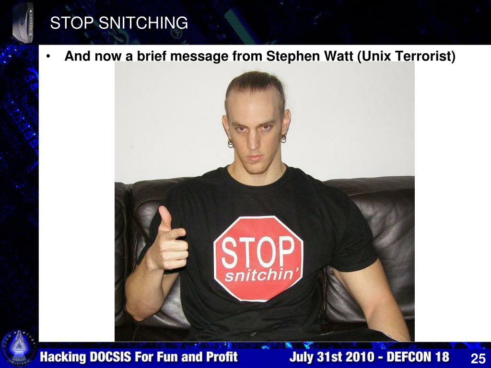

A Security Curriculum
Table of Contents
Curriculum
Here is everything I found that fits together to achieve the goal of being able to follow the people who keep winning DEFCON and other CTFs so we can get good enough to eventually be paid to do this being a junior consultant and working our way up to freelancer in the 'security industry' which today can be even more sketchy than old school blackhat communities.
I mimic most of the security package at TU/e because all the most critical crypto/sec work is being done in Europe right now because of insane US laws on crypto software export. There is still an ongoing lawsuit by Daniel J Bernstein (djb) where the NSA/NIST is slowly delivering FOIA responses about sabotaging crypto development.
Take what you want or start anywhere it doesn't matter there isn't a linear progress you must follow.
C/Assembly
Most hackers learned by reading K&R but this is a good course teaching how to think about code logically rather than operationally.
- CMU 15-122 Principles of Imperative Computing
- Use wget to get these includes some solutions.
- Use Andre Platzer site symbolaris for different semesters if you want
- CryptoJedi Hacking in C assignments
Industry today is creating their own architecture we'll likely be hacking not x86/ARM. There is a ton of hardware security problems being exposed recently we should know about.
- ETH Zurich Digital Design & Computer Architecture
- MIT's secure hardware design labs to do browser fingerprinting, cache attacks
- Learn how to create a 'PUF' or physical unclonable function where you can test to see if someone has messed with your hardware
O/S
MIT has a yearly open course OS Engineering (YouTube vids from earlier semesters) but instead I'm going to work through Xv6 which is similar to the old school Lion's Commentary on Unix 6th Edition with source code which every OS hacker back in the day used. It's a short book where concepts are clearly explained and you read the code at the same time. The binary exploitation content we take will cover everything we need to know about modern kernels.
Much more interesting to us is Serverless Computing which there are countless startups for and we will want to know how to compromise these or build a more secure severless architecture.
OSquery is written in hacked together C++ with many issues and is an attack vector itself. Rewriting just a small part of it in your language of choice would be an excellent self-guided operating systems course or you could start maintaining it and land a role at Sophos and other giant security firms who rely on it and similar software like Steampipe.io (golang)
Software Exploitation
Numerous CTFs exist for this we can replay like PLAID or picoCTF which has an extensive practice area from easy to hard difficulty.
- The courses ASU uses for pwn.college
- CSE 365 Reverse Engineering & Binary Exploitation modules
- CSE 466 Systems Security
- CSE 598 Applied Vuln Research
There's much more content we can look at, some is overlapping material we can skim and some of it new:
- GMU 395 Linux Binary Exploitation 2021
- Full access to everything
- GATECH 6265 Information Security Lab 2023
- Recorded lectures on YouTube
- Access to tutorials but not labs
I'm primarily interested in Brown's grad research course:
Securing an entire company
You can straight-up buy CISO certification after 5-7 years work experience in some kind of management role then your career becomes wearing a suit and rolex everyday while sitting on the executive board. The places I've worked at they typically are given no budget so I have no idea what they do all day except draw a large salary.
- MIT's 6.566 covers how to secure the entire organization
- Make it not economically viable for an adversary to bother
- Supply chain security of software
- WebAuthn or Okta to defeat phishing
- OSquery-like agent to check everybody's software like browser extensions
- Centralized logging to detect intrusions like osquery agent being killed
- Managing untrusted storage servers
Cryptography
This is 'real' crypto and not the bozo world of web3 schemes but we will learn enough should you want to get into ridiculous web3 CTFs held on yachts in the Emirates to capture wallets instead of flags. That is if the other participants don't forge submission sigs.
- TU/e Cryptology and Post Quantum Crypto 2023/22
- Recorded lectures/notes/assignments all open
- Insight into crypto secure against quantum computers
- We have to learn a small amount of modern algebra and Coding the Matrix
While we take those courses and learn cryptanalysis these are all the hacking projects we can do at the same time
- Crypto Protocols in-depth and how to attack them
- Cryptopals challenges
- Engineering Crypto Software how to optimize ChaCha20, Poly1305 and ECDH/Curve25519
- Start with functioning reference in C
- Remove sources for timing leakage
- Profile and optimize code
- Write arch-specific implementation in assembly
- Attacking Networks 2019
- How to set up firewalls and circumvent them
- VPN crypto like Wireguard
- 2IC60 TU/e Lecture Notes Computer Networks and Security.
Typical industry options
You can always create your own security role from inside a company you already work for.
Freelance researcher
Selling exploits for a lot of money. Some of these bounties are hilarious like only 100k for code signing bypass, it must be easier than it looks if it pays lower than a WordPress exploit. They also really want a Docker escape vuln. Zerodium is another broker and their payouts chart is supposedly market rates. The way this works is they pay you over time not all at once that way there's an incentive for you to not turn around and resell to a competitor.
If you can do this typically you will want to work for dfsec they pay you a bonus for any major bug you find. It used to be you could just extract control-flow graphs and run a logical assistant on it finding any kind of potential attacks to try. I have no idea what they do these days but we'll find out as we go.
SOC threat analyst
SOC means Security Operations Center. This is a wagie working shifts for a 24/7 (usually remotely) enterprise tier threat response contractor who is paid to analyze system logs (almost always Windows OS logs) and analyze network traffic to spot problems. You primarily extract and filter data with OSquery and do 'threat intelligence'. The curriculum we are already doing is more than enough to get into this or find some kind of learning path for SOC Levels 1 and 2 but these almost always cost money. This is the only free course (edx) I could find. This one is the cheapest I could find it appears to be some subscription model of $14/m or you could simply use their syllabus to look up everything yourself like OSquery, Wirehark, Snort, MITRE etc. Most people get into this via the military or were former system admins or pay for certs.
To find SOCs search for security operations center jobs or try Sophos or NCC Group (Netherlands or Philippines) these companies have to hire local citizens and can't outsource because of security clearances. I imagine these outfits exist so gov contractors and giant medical companies can satisfy some kind of insurance compliance or lawsuit protection from any breaches/leaked data. If you get in here you want to move up to running the place because they pay for all your silly certs and because every tech company will hire you as a Chief Information Security Officer (CISO) should you leave SOC work. Outside of finance and pharma/medical the CISO is usually given next to no budget and no authority you get paid a lot of money to sit on the executive board while answering emails and making presentations it's a ceremonial job almost where you hire the same SOC you used to work for and then play golf or whatever CISO's do all day.
Security consultant
Someone charging 7-20k+ per week for an application security assessment. This kind of person can do the 'full stack' of security review from source code review/dependencies to secOps deployment to how developers handle the keys for signing into the source repository. With large security consulting outfits, the typical engagement is 2-3 consultants for 2 weeks where there is juniors competent in running security procedures like penetration testing and the principal consultant oversees them and presents all the reports the juniors produced justifying the money spent. Large contracts they will outsource reverse engineers and all kinds of other specialists charging insanely high hourly rates. The major outfits are Leviathan security, IOactive, Bishop Fox, NCC group, Crowdstrike (if they are still in business after that parser being exploitable and not verifying inputs blew up the whole world) or search for security consultant jobs. Leviathan is probably the biggest in the US because I believe you have to contract either them and/or Bishop Fox in order to use any kind of Google auth in your software. They even sell a 'virtual CISO' service. If these outfits aren't hiring send in a general application or email them and say you want to apprentice showing them some kind of proof of your skills like custom tools you wrote or something.
If you live in France then get in with Synacktiv they place first or second in every global competition or REverse Tactics. If you live in Saudi Arabia join Haboob SA they also win global competition prizes. If you live in Korea join KAIST or theori. If you live in Vietnam join Viettel. If you live in Taiwan join DEVCORE. If you're in Germany join the redrocket club. If you're in the Netherlands get into NCC group (Delft).
The security business
If you live in the UK look at the openings page for PortSwigger the company that sells Burpsuite the most popular web penetration toolkit. Look at the opening for Master of the Swigverse they offer to teach you from the ground up the entire business of selling a security product. Full mentorship in competition analysis, customer engagement to improve the product, hiring wagies to code, public relations, general management of teams and finance.
How bad it all is
If you haven't seen it, watch the CS19 lecture on security.
Immediately npm breaches are brought up, the JavaScript package manager. If you've ever installed some Node.js software to run it locally you will have noticed there are enormous amounts of dependencies being automatically installed. If you missed the attack description the stream dependency was attacked to specifically target some Bitcoin wallet software in hopes that the wallet developers themselves would include it in their builds and they did. All the attacker had to do was find some unmaintained but popular dependency and take over the project. Many browser plugins have had this happen too, either sold to ad-tech or malware writers.
@9:00 we're getting into nightmare tier where VSCode the IDE most developers use is now compromised. The point is some dependency nobody pays attention to got turned into malicious code and found its way into almost every critical program on earth.
@19:50 seemingly benign software you find in the wild like adding colors to your terminal or javascript console is filled with malware of course but you probably knew that already. Famously this was almost all the flashlight/torch apps on app store before they cracked down.
@28:14 he's reminding us again the most dangerous software is the software you least expect to be dangerous. @35:27 every basic shell copy program in every OS will bring in fopen() and then you're screwed, it has access to the entire filesystem.
'The internet, operating systems, all programming languages, these things were built to be maximal insecure'.
He talks about SELinux also known as MAC or mandatory access controls like AppArmor. MAC is something enterprise security people love because it's knob tweaking. Whenever you search for AppArmor or SELinux the number one recommendation or most searched for query is how to turn it off because it's interfering in someone's work and in the real world that's what everyone does.
It is even worse than you thought
QRD:
- CPU cores are broken 'silent data corruption' and likely exploitable
- DDRx attacks have never been fixed and are getting worse
- Flash NAND/SSDs have the same problem and are exploitable
The origin of this problem is likely everything being too close to each other on a chip with not enough voltage causing strange Physics errors leading to bitflips. There is many variants of Read Disturbances in modern memory chips and the new attacks don't even require repeated reads or even temperature thresholds anymore so none of the mitigations peddled by manufacturers are working. Data centers have to write their own intelligent memory controllers with a FPGA and have that mass produced.
This all explained in ETH Zurich's Architecture grad course which we'll do in this workshop.
Open-source sabotage
This talk is from 2014 but nothing has changed in OSS development. Poul-Henning Kamp is involved in the FreeBSD project and here he imagines what would he do if he were tasked by some nation-state to 'control' or sabotage open source.
@5:10 is very interesting. It reminds me of back in the day when many people writing 'security Android ROMs' or those in-memory operating systems you loaded up with a boot live DVD/USB or advanced security OSs like Subgraph OS. They all disappeared and abandoned their projects and he imagines in the talk how legit developers are purposely bribed to do so being put on some nice salary at a 'friends of NSA' company.
@12:28 this is what we came for how modern open source projects can be derailed or infiltrated. @16:40 some mobile browser versions won't even let you use self-signed certs anymore even after clicking all the 'omg but are you aware of the risks!' buttons. The deceptive defaults he mentions I have been burned by many times.
Security research is a thankless career
Egor Homakov a security researcher once wrote this post (now deleted) Why it sucks to be a Security Researcher. He is completely blackpilled and tells us how nobody cares or wants to fix the problems. If you raise the alarm you are threatened or dismissed because everyone just wants to keep the status quo and make it somebody else's problem later. He wrote multiple warnings to the Rails git repository and they hand-waved the problem away as 'impractical' and 'would never happen' so he started his security career by hacking the repository. They still denied the problem so he opened an issue 999 years in the future.
The professor of the ETH computer architecture course we'll do explains in one of the lectures how he had his 2013 paper describing a new DRAM attack rejected by 3 votes because they claimed 'industry has already solved this problem'.
Massive surveillance
Now canceled former Tor developer and 'Wikileaks associate' Jacob Appelbaum quietly got a PhD from two of the world's premiere crypto experts DJ Bernstein and Tanja Lange at TU/e in the Netherlands. I don't know or care about any of the details of his fall from grace but he did write a thesis/dissertation so we may as well read it. The pdf is here or direct link here.
Skimming the intro this is more of a political manifesto instead of a thesis I'm surprised the school didn't demand he remove a lot of cringe here. In the section he calls bad mathematics he shames others on cruise control who take fed cash yet seems completely unaware he once worked for the Tor Project which is funded by US federal agencies like the DoD. If you follow DJ Bernstein then you know he amusingly rants on the IETF crypto working group mailing list whenever some stooge proposes yet another badly designed or patent-trolled elliptic curve scheme so that to me is the definition of 'bad mathematics' trying to sneak in broken by design protocols. In 1.2 Thinking about the future some of the claims derived from the questionable sources he lists are so wild even Wikipedia jannies wouldn't have green-lighted this so I skipped most of it but the theme as far I can tell is crypto still works if it's designed and used correctly.
Section 2 Background on network protocols skimming this, OpenVPN is demonized as being the target of NSA weakening but OpenVPN code is so ridiculously bad and convoluted that they probably didn't have to do anything nefarious to it except promote its use.
Section 3 Background on cryptography if you look at Tanja Lange's crypto course page she recommends for general background this free online book so we can refer to it as we very lightly read this section. In the hash functions chapter a hash function h maps bit-strings of arbitrary but finite length to strings of fixed length so the domain of the function (inputs) maps to a range (outputs) that is many-to-one and the inputs are larger than the range, This means there exists the possibility of collisions where 2 distinct pairs of inputs have the same output. Now you know how password hashing works, the hashes map to a plain text input but the Appelbaum thesis notes these password hash functions are designed to be extremely slow by purposely running inefficient calculations that require large amounts of contiguous memory so you can't easily brute force the hash by bombing it with millions of strings to guess passwords.
Block ciphers chapter seems to be a function that accepts as input a n-bit sized vector of plaintext and a key vector then a product transformation occurs to create ciphertext that is the same size of the input. If the input exceeds the size of the n-bit block then it's partitioned into same-size blocks and encrypted separately using a mode of operation to do so one old example is ECB or electronic-codebook mode. A symmetric key is shared via some Diffie-Hellman public key system we can learn later. The term 'nonce bit' is called IV or initialization vector in older books. Djb's ChaCha20 high-speed crypto and Poly1305 MAC is mentioned and detailed here if interested. Skimming the rest of this chapter there's an interesting comment about NIKE or non-interactive key exchange that has a deniability property where finding encrypted content that decrypts with someone else's key is still not definitive proof of any communication between each other.
Chapter 4 you probably already know most of this if you read the Snowden leaks and 2017 Wikileaks CIA files and there's a bunch of material here in this chapter on glowie PSYOPS strategies all laid out in chronological order. Applebaum goes totally off the rails again back into political manifesto territory. The later content going through all known shady nation-state malware and explaining how it works is worth reading. Even though a lot of these exploit 'products' in the leaked ANT catalog are from 10 years ago I doubt much has changed especially what data they were after so the methods change but the target is the same.
Chapter 5 GNU naming system has a good crash course on how DNS works. The NSA shenanigans detailed here are amusing they ran some global monitoring bot network to hide their DNS queries after an attack to admire their work and avoid blame. GNS is a GNUnet app which I like way more than all the blockchain nonsense going on right now requiring massive amounts of mining. Note to self look into GNUnet more.
Chapter 6 WireGuard tweak only works for some future quantum adversary meaning if traffic is vacuumed up and held to be broken years later then this tweak works otherwise an active quantum adversary you have to redesign the entire WireGuard protocol. That's if quantum computers aren't a total scam every company in the field always makes suspect promises of massive amounts of qubits then nothing happens.
Chapter 7 Vula has code to read here and is developed anonymously obviously because of Appelbaum's pariah status. I'll have to come back here after we get familiar with post-quantum crypto an automatic LAN encrypting scheme is a pretty awesome idea.
Chapter 8 REUNION is a PAKE for physical key encrypted key exchange, a kind of Assange-tier tradecraft meeting protocol for short message exchanging like a business card with contact info.
Incomplete history of h4xxing
In the early days, you basically stumbled into hacking/phreaking by accident by either curious discovery pressing a combo of commands or blowing a Cap'n Crunch free cereal box whistle into the phone handset and gaining complete control over the system. Techniques were traded for free there was no real security industry for software or even much organized criminal activity until the hacker crackdown. Most crime was stealing technical manuals and petty juvenile pranks on EFnet rivals or getting the numbers to a group of payphones in NYC, exploiting some office's PBX to call them for free, and some other hacker would answer and give you advice where to find information. That was the scene, a bunch of 'keyboard cowboys' and around this time Hackers the movie came out which besides the (fruit boots) inline skates was very realistic it should almost be a documentary like how you'd go to meets and they'd drill you what do you know.
Post-Mitnic conviction in the late 90s to mid 2000s this changed to a blackhat culture where cloning SIM cards, cracking copyright protections and releasing pirate software (warez scene) took over. There was always a warez scene or some kind cracking software and removing DRM junk but it became more monetized spawning a binary exploitation/reverse engineering and remote box popping culture that still exchanged ideas and software for free but quickly a marketplace emerged for jacking financial data and 0day auctions started springing up in the underground. That card scene only had a very few actual hackers grabbing databases or sniffing wireless point of sale for the most part the people involved were just common identity thieves who purchased devices to place on ATMs or hired staff to double swipe cards at restaurants and airports. The ultimate spot to double swipe cards was at the desk where 'airport improvement fees' were forced on departing travellers so you were on a plane for 8 hours while your card was being used and didn't notice.
Today these criminals have an opposite strategy of trying to not get noticed instead of withdrawing millions in a single night from global ATMs and alerting Interpol of their existence they now charge micro transactions on hundreds of thousands of cards in hopes the mark doesn't notice but that's still not hacking it's just ID theft.
Anonymous was the 'hive' a large group of kids willing to coordinate and use the tools that blackhats gave them either for lelz or to cover for whatever they had just done with the same tool. "This attack signature is too unique I'm going to get caught for sure! Wait I know who to blame for this the hacker known as…"
The last of the true hackers
Obtain the book Hackers by Steven Levy and read the chapter The Last of the True Hackers. RMS spent two entire years reverse engineering software that took a team of people to write. He was routinely breaking into the lab servers and rewriting all the passwords to be blank so no student would be spied on by the administration. Up until MIT kicked him out a few years ago he was still hacking their security system cloning an access pass to campus so he could come and go anonymously. Now that we've read Appelbaum's thesis on mass surveillance this meme no longer seems like a meme anymore.
The last of the true blackhats

Stephen Huntley Watt is the only convicted blackhat who never snitched.
One of the most famous blackhats of the 2000s because of PR0J3KT M4YH3M a war against the whole so-called white hat industry. There was an anti-sec movement back then claiming that disclosure sites like bugtraq, security conferences and anti-virus corporations were creating the problem they were paid to solve by dumping what is essentially nuclear weapons to masses of global criminals free of charge. A classic method that still works today is to run a diff on whatever disclosed patch to reveal the exploit then write up a turn-key h4xxoring product and sell it on skiddy forums as it (still) takes months or sometimes years for people to update their systems so unpatched systems were wide open. "Better hire us to protect you" these outfits would claim while at the same time creating chaos by arming every skiddy on Earth. Even the recent Pwn2Own competitions have this problem where there is a patch gap between Chrome and Chromium being patched so some have noticed the exploits from Pwn2Own will still work for some period after especially on any headless instances of these browsers because they run outside the usual browser sandbox.
A lot of project mayhem is detailed in ~el8 text files from 2001-2002 which are written in a style that you would expect from mostly teenage blackhats back then. They attacked every known white hat and company in the security industry and somehow avoided prison.
He was making a nice salary in NYC as a trading systems software developer (at now called TradingScreen Imagine) and gave away for free a packet sniffing program to a fellow blackhat he knew since high school because that's how the hacker scene used to work you never charged money to other hackers. That other blackhat did a really stupid crime with it and snitched where he got the program from so Watt spent 2 years in fed prison for writing a single packet sniffer. He claimed on his Xwitter the only way he could get a job was to apply to a Ukraine company after prison and if you search around they are desperate for foreign remote devs in Kiev because of the war. Last I heard he still owes the US gov $170m+ and works for DomainTools as a principal software engineer.
Max Ray Vision

A court declared Max a 'super hacker' who was so good the judge at his trial called him 'the hacker of all hackers' and gave him way less time than normal ID thieves would get. There's an entire book about this guy worth reading because he took over the entire underground market in a single night breaking into the 4 biggest competitor markets and stealing their databases, emailing all users that they should join his site instead then shutting his competition down permanently. Some of these sites touted their uber security like requiring a signed cert handed out only to a few people to even connect to the server and he yoinked those certs and broke in. His demise began when one of the sites he took over was a federal sting site and the feds weren't too happy about him ruining their entrapment op by exposing that the owner was using screen capturing software that only someone on a federal leash would use. Doing a grandiose public takedown and overnight becoming El Patron of global e-crime I'm sure gets you noticed by feds anyway.
Max although on supervised release now is still facing new charges claiming he used a phone at the prison to 'control drones and drop contraband in the prison' which is of course almost surely nonsense. Personal experience tells me there was probably some guy Max played cards/games with who pestered Max to tell him how some crime like that could work then he tried to do it himself and failed he of course snitched to blame it all on Max 'look at me I'm an idiot, you think I could orchestrate drones to drop phones in the yard?'.
Max used a lot of tricks like hiding his very popular marketplace inside somebody else's network. We'll learn about this later but I suspect he modified protocols that network admins would scan for like changing the rounds in ssh and creating an invisible protocol. He then could camouflauge the traffic as normal network traffic. The world's largest criminal market was hosted by unsuspecting corps and their incompetent network admins.
ASTRA
There is a hacker called ASTRA who was revealed to be a 58 year-old retired mathematician living in Greece. He remotely broke into France's Dassault corporation which manufactures military aircraft and weapons and sold secrets worth 350 million dollars from 2002 until 2008 to their competitors worldwide with the help of a global crime network. He was not an employee leaking information or anything or else he'd be in prison and his identity revealed. Nobody has ever revealed his identity because he likely was hacking OpenSSL or something they deemed too important to not know about so retained him as a consultant. He was living under perfectly forged gov identities in Athens that he had hacked (again prob OpenSSL 0day breaking into gov dbms and having them print him a new ID) and they never revealed how they caught him though likely it was following money or a lesser guy in his crime network was picked up and snitched.
The lesson here is if you're going to do this then go for the olympic medal of hacking. However you just read a dissertation earlier on how impossible it is to avoid the global surveillance state so should probably reconsider.
Darknet OPSEC
Let's watch this DEFCON 30 talk from last year about a guy involved in shady stuff. I have some experience in this so will add annoying commentary but I was never using these sites to sell or buy I was interested in custom software building and they would always make me an internal member with access to private messaging groups just because I'm good at infiltration. This talk is about 'keeping safe from the federal gov'.
I don't recognize his aliases from back in the day and there are def some I remember such as one mod on a popular market you probably know about that had a confused looking John C Reilly avatar who got away through pure stupidity living up to his avatar. They revealed in court docs when they went after all the admins and arrested them he had escaped because of a failed sting they had set up for him. He was supposed to pick up money sent from a compromised admin account but he was so incompetent he went to the wrong address both times and by then the news was out everyone was being arrested and he disappeared. Everytime I think of criminals with dumb luck I remember that guy defeating multiple federal agencies with his stupidity.
Bruce Schneier has a good article about crime how criminals never use probability to estimate the cost of their actions or if the crime they're about to do is worth betting on. In finance, you are always estimating the expected value of some game strategy and deciding if it's worth the risk. You never go all-in and risk everything like a criminal would do betting his entire future on a quick reward because that's what a fool would do.
Many of these markets are busted because of the greed of the operators of course and because they seem to have faith in crypto app marketing. For example The Farmers Market used Hushmail so an entire archive of decrypted messages was available to the feds. Old blackberry phones used to be sold with 'unbreakable encryption' too but you could easily compromise the server and get all the keys.
@15:50 is the fallacy 'how they screwed up' because if you read anything here so far you realize that it's impossible not to screw up the global surveillance capabilities are just too advanced and corrupt now you would need to have a fail-safe plan of living in a country with non-extradition where you also enjoy local political status like you are the mayor's son or police chief's cousin. If you don't have political cover then these foreign nations phone your local police dept about you and they arrive to shake you down for money which is probably a much worse experience than going to jail.
@19m some good advice here but again using whatever meme OS like Whonix is not your most critical attack vector it's people you know in real life or trying to cash out the money your crime empire generates.
@26:49 Sabu the guy in lulzsec was busted after he got wasted and accidentally signed in under a watched nym to some chat channel without using his normal protections. What was critical about that is they already knew who he was through means not disclosed and were watching his apartment building from a nearby parking lot when he handed the feds a warrant by logging in with his home ISP address.
@29m the problem with this kind of activity is you can't convert it to pay yourself on the scale of cash flows needed for trafficking. I'm sure you can think of ways you believe have never been tried before that will totally fool advanced analysis that looks for these patterns but there is no such thing as original ideas on how to launder money at this scale that's why elaborate global crime networks are used. Many countries have laws limiting how much of their currency you can remove like China so their rich overseas residents will buy up foreign currency from criminals and then settle within the Chinese banking system so the criminals get clean money and the diaspora millionaire residents get foreign exchange. The criminals then have 'legit' offshore accounts in China their government can't touch and they don't have to carry around a million dollars in cash. Even a small operation like 10k in Monero per month is unsustainable and yes even if you made your own exchange to sell it directly and many of the p2p exchanges that are open source have questionable code I found 2 of them rewriting elliptic curve libraries in Python using no scale() protection at all for thread locks.
@33m he redpills that all the message forum style lawyers are wrong because the feds simply lie to someone you know that they have to talk so they do and these witnesses don't even need to have witnessed any crimes you've done they just need to confirm certain facts and movements in court where the feds present this as proof of furtherance of a conspiracy.
End of this he warns it's a bad business model doing what he did and the return on investment is never enough for the risk. Making a lot of money legally is not impossible. Let's say you finish this security workshop here and are hired as a junior consultant somewhere being paid a $40k yearly bonus which is typical. In 2 years you can put a down payment on a house with just your bonus in many US states. Every year you take the same bonus and add value by watching Scuffed Realtor to learn how to properly renovate a house and landscaping. In 5 years you will have added $200k worth of quality work and maybe you now have a family and need a bigger house so can sell making a nice return on your investment. Now you can afford a down payment on much more valuable property and repeat until you have an asset portfolio worth a few million dollars. Note you aren't flipping houses and speculating on real estate you are investing in your life during different stages and you end up rich anyway. If you become a senior consultant or freelancer you will be making $1,000 per work day in just salary at the minimum. If you become a CISO or other senior management then double or triple that. If you use the information here to sell security tools or make a startup then sky is the limit.
Principles of Imperative Programming
If you don't know how to program in C this will teach you. It starts with c0 a memory safe version of C for the purposes of teaching program correctness then switches half way through to regular C.
- CMU 15-122 Principles of Imperative Computing
- Use wget to get these includes some solutions if you want to try assignments.
- Andre Platzer site symbolaris has different semesters if you want but content is generally the same every year
Setup
Let's get the c0 programming language (pronounced c-naught) by installing it here. Use any text editor and run the .c0 file in the coin interpreter see this setup video and skip to @8m 'Running a c0 program'. You can also use various editor plugins in VScode marketplace or emacs c0-mode but I'm just going to manually run everything in coin from the shell.
The first lecture if you downloaded everything contains mystery2.c0
/* Mystery function with a bug or two
*
* 15-122 Principles of Imperative Computation
* Frank Pfenning
*/
int f (int x, int y) {
int r = 1;
while (y > 1) {
if (y % 2 == 1) {
r = x * r;
}
x = x * x;
y = y / 2;
}
return r * x;
}
Type 'coin mystery2.co' and you get the c0 interpreter. Inside the interpreter enter f(3,2); (note the semicolon) and press return to see it evaluated. To exit Ctrl-D which is the universal exit command for any Unix/Linux shell program meaning 'end of input' or type #quit. This is all in their setup lab or the video I posted above. The c0.typesafety.net domain is long gone.
Contracts
Reading the first lecture and slides from the Fall 2024 version. There's a former prof of this course who made a vid about loop invariants. We aren't ever going to need to prove invariants the purpose of introducing contracts is to make students reason logically (page 30) instead of operationally (page 31) about imperative code because C is filled with land mines and we of course want to know what those land mines are to exploit them later.
If you get a strange error note how the scope bracket { comes after the pre/post conditions and invariant:
int POW (int x, int y)
//@requires y >= 0;
{
if (y == 0)
return 1;
else
return x * POW(x, y-1);
}
int f (int x, int y)
//@requires y >= 0;
//@ensures \result == POW(x,y);
{
int r = 1;
int base = x;
int exp = y;
while (exp > 1)
//@loop_invariant r * POW(base,exp) == POW(x,y);
{
if (exp % 2 == 1) {
r = base * r;
}
base = base * base;
exp = exp / 2;
}
return r * base;
}
In the first lecture there is a lot of content here, try and understand some of it then refer back to this lecture later as the course goes on when you start to fluently pick up designing programs by contract. In Verifying the Loop Invariants integer division 1\2 is 0: (2n+1)\2 is 2n\2 + 1\2 or n + 0. In Termination the antecedent is the boolean check in the if-clause: if (antecedent) then (consequent). If none of the syntax makes sense like compound assignments in the exercises then look at the c0 reference under 'Commands'.
Let's drill this. Reading this first homework which has solutions, try proving it yourself then look at the solution to refine your proof while doing the next problem.
/* 1 */ while(j < 10000)
/* 2 */ //@loop_invariant 2 * i == j;
/* 3 */ {
/* 4 */ i = i+2;
/* 5 */ j = j+4;
/* 6 */ }
Prove 2i = j is perserved when 2i' = j' which is one iteration of the loop.
- Test cases you don't have to do
- j=0 and i=0
- then i=2, j=4 and 2*2 = 4
- i' = i + 2 and j' = j + 4
- Before the loop 2i = j then after 2i' = j'
- 2(i + 2) = j + 4
- 2i + 4 = j + 4
- 2i = j
Try stepping it twice to see how if you prove one iteration preserves the loop invariant then you prove every iteration:
- 2i + 4 = j + 4 loop 1x
- 2(i + 2) + 4 = (j + 4) + 4 loop 2x
- 2i + 8 = j + 8
- 2i = j
/* 1 */ while (k <= n)
/* 2 */ //@loop_invariant i*i == k;
/* 3 */ {
/* 4 */ k = k + 2*i + 1;
/* 5 */ i = i + 1;
/* 6 */ }
Prove ii = k is preserved when we step the state to i'i' = k'
- Test: k=0 and i=0 then k=1, i=1, and 1*1 = 1.
- k' = k + 2i + 1 and i' = i + 1
- Before the loop ii = k then after i'i' = k'
- (i + 1)(i + 1) = k + 2i + 1
- ii + 2i + 1 = k + 2i + 1
- ii = k
/* 1 */ while(i < x)
/* 2 */ //@loop_invariant x <= y;
/* 3 */ //@loop_invariant i < y;
/* 4 */ {
/* 5 */ i++;
/* 6 */ }
Prove i < x <= y is preserved when we step the state to i' < x <= y
- Test: i=0 and 0 < x <= y holds by line 1 we know i < x and line 3 (and line 2) we know i < y
- i' = i + 1
- Before the loop i < x <= y then after i' < x <= y
- i + 1 < x <= y and this fails if i=1 and y=x=2
- Loop guard (1 < 2) permits this but i=2 after the exit breaks the invariant i < y
/* 1 */ while (a != b)
/* 2 */ //@loop_invariant a > 0 && b > 0;
/* 3 */ {
/* 4 */ if (a > b) {
/* 5 */ a = a - b;
/* 6 */ } else {
/* 7 */ b = b - a;
/* 8 */ }
/* 9 */ }
The exercises in the first lecture notes covered something similar where we have to prove cases. Here the cases are (a > b) or (a < b) because the loop guard says they can't be equal. Try proving a single case, tests are pointless since it's trivial to see if a and b aren't equal and both are > 0 then this program invariant will hold.
- a' = a - b
- Before (a > 0) and after (a' > 0)
- (a - b ) > 0
- b doesn't change in this if-branch so b' = b
- Assume b > 0 by line 2? it will be proven next case anyway
- a > b by line 4
- (a - b) > b > 0
I looked at the solution after and I was sort-of correct we'll just have to see more examples in the semester. I went back to read Verifying the Loop Invariants in the lecture notes to see if we can assume b > 0 by line 2 and they indeed do assume the invariant holds in their preservation example.
/* 1 */ while (e > 0)
/* 2 */ //@loop_invariant e > 0 || accum == POW(x,y);
/* 3 */ {
/* 4 */ accum = accum * x;
/* 5 */ e = e - 1;
/* 6 */ }
The || symbol means OR so either (e > 0) OR (accum = pow(x,y) is the invariant. Here I am not stepping the loop I am testing it with various possible inputs since we know e=1 fails to be preserved and we want to see if accum fails too.
- accum=0, e=1, x=0 then 0 = 0y
- accum=1, e=1, x=x then 1x = xy
- accum=2, e=1, x=x then 2x = xy and broken if x=2 and y > 2
/* 1 */ while(x == 2*y)
/* 2 */ //@loop_invariant i == 4*j;
/* 3 */ {
/* 4 */ i = i+2*x;
/* 5 */ j = j+y;
/* 6 */ x = f(i);
/* 7 */ }
Note x equals 2*y when in the loop so you can substitute 2y anywhere x is
- Test: i=0 then i=2x and since x = 2y then i=4y
- Test: j=0 then j=y and invariant of 4j or 4y holds
- i' = i + 2x
- j' = j + y
- Before the loop i = 4j then one step i' = 4j'
- i + 2x = 4(j + y)
- i + 4y = 4j + 4y since x = 2y
- i = 4j
The rest of the homework we haven't learned yet like assignables.
Ints
Lecture notes are well done and slides. There's 2 YouTube recorded lectures from their 15-213 course lecture and lecture2 covering the same topic if you're interested. We will mostly only use hex and in the 15-213 lecture he suggests an easy way to memorize this by knowing the value of A=10 and F=15.
Arrays
Lecture notes and slides which talk about frames these are stack frames. We can finally start writing programs in c0.
TODO